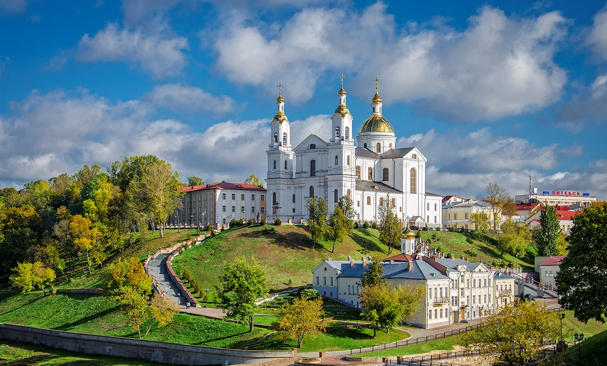

Художественная галерея

Софийский Собор
Памятник буквее "Ў"
Свято-Успенский кафедральный собор

Летний Амфетиатр

Спасо-Евфросиниевский монастырь
|
Художественная галерея |
Софийский Собор |
Памятник буквее "Ў" |
|

Свято-Успенский кафедральный собор |
Летний Амфетиатр |
Спасо-Евфросиниевский монастырь |